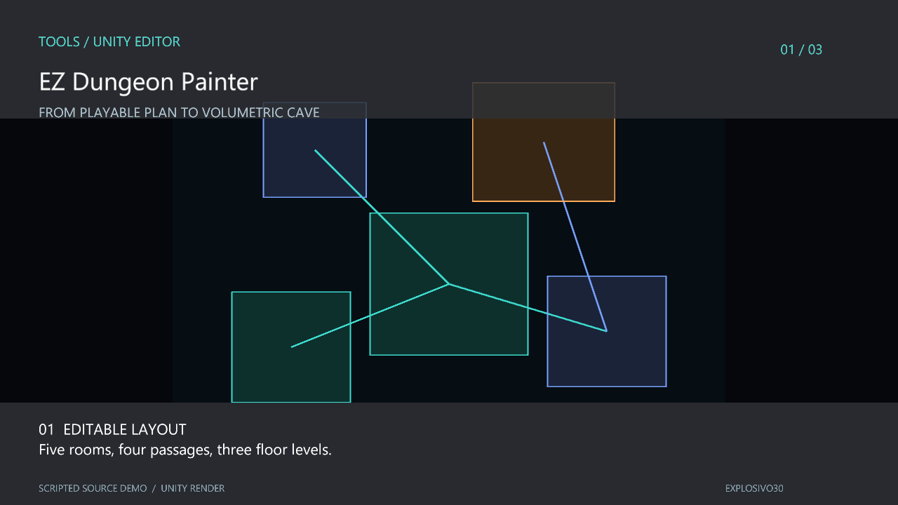
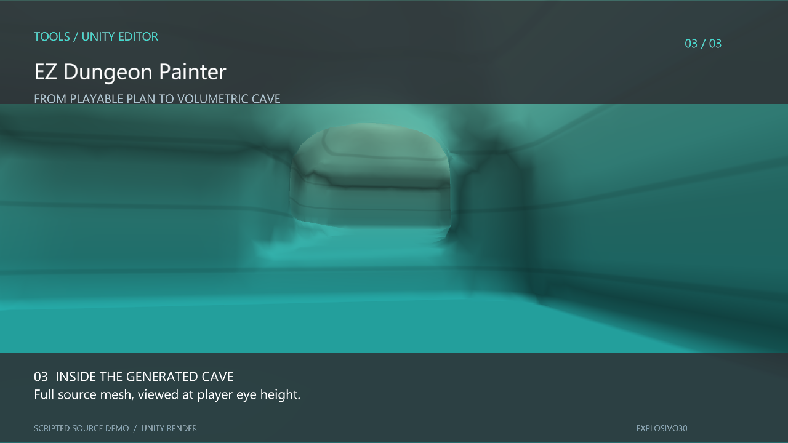

01 / Editor tooling
EZ Dungeon Painter
Draw the spaces a player needs. Shape the cave around them. A Unity editor tool for authoring connected rooms, passages and changes in elevation.
- Focus
- Level design tools
- Built with
- Unity 6 · C# · Editor API
- Approach
- Volumetric meshing
A layout before a landscape
The starting point is a readable floor plan: rooms, paths and the heights that connect them. The tool keeps those authoring operations as editable data, then generates the cave surface from a volumetric field.
This separates the designer’s decisions from the generated mesh. Rooms and routes can be adjusted without treating the output geometry as the only source of truth. Authoring checks flag disconnected spaces, insufficient clearance and traversal links that need a gameplay mechanic.
- 01
Author
Define rooms and connect them across geological levels.
- 02
Generate
Build an organic shell from the volumetric field.
- 03
Inspect
Review the interior, connection heights and validation feedback.


About the demo
The capture uses an isolated demonstration scene. All nine layout spaces are connected; mesh validation still flags one non-manifold edge in this sample. Actual traversal depends on the player controller and the mechanics assigned to vertical links.